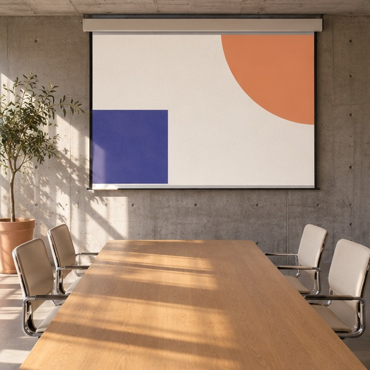
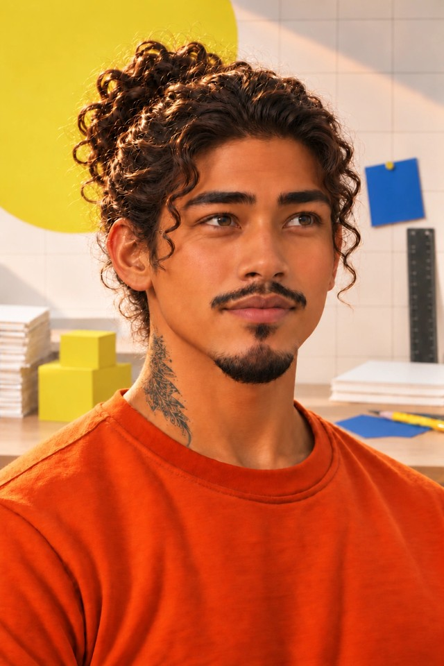

Treatment D / Identity study
The Worktable
Good work has a place.
Every action has a place, a name and a visible result.


Good work has a place.
Every action has a place, a name and a visible result.
Show the thing the team worked on and the person who can act on it next. Lead with a specific artifact, such as a slide or episode outline. The product story moves in three beats: open the work together, let an agent take a turn, leave a record the team can find again.

Shared is the name on the team’s home. 2lp names the runtime in technical and administrator contexts. A node hosts an agent’s runtime, and seats are working environments assigned to a team or an agent. In setup, show the group, node and seat together so an administrator can trace where work runs.
Place the current group name beside the action. At review, state the material, destination and audience in ordinary language. Where a permission is missing, name the group role that can grant it. A receipt repeats the scope after an action succeeds.

Give saved decisions the group name, author and source. Make a deliberately saved item easy to distinguish from a line spoken in a meeting. When an agent draws on group memory, keep the source close enough for a teammate to check it.
Use wool felt as a quiet backdrop for editorial scenes and hero art. Treat clean paper shapes as artifacts with straight edges, offset in a single direction. A single short apricot stitch can join two related objects in an illustration. Keep textures at the margins of live product surfaces so labels and work stay legible.
Build the core image set around a shared table, a real Barcelona recording desk, an empty meeting room and a felt folio. Use directional daylight and let the oak, wool and paper retain their own texture. Give each frame a clear object and enough space to crop across formats.
Use Juan’s commissioned portrait as the same identity in Rooms, Juan Live and WhatsApp. Pair him with the active artifact in a Rooms scene, and give his name and channel enough weight to stay legible in a small preview. The slide, when he presents it, becomes the most prominent object on the screen.

Use Lola’s commissioned portrait on her agent card with a short description of the team context. On the administrative view, show her own node and the dedicated seats available to Matt’s team. Keep the team’s active group visible on the work surface.
Anchor Milo’s profile in the AI Engineers Barcelona podcast. Use his commissioned portrait beside the episode or recording desk. Feature a concrete production artifact such as a guest brief, outline or recording plan so Milo’s role makes sense immediately.

Place Nando’s commissioned portrait alongside his crew’s input and the current piece of work. Use a named person or group on the next-action line. In crew scenes, make the active collaborator obvious with a written status beside their name.
Use the approved portraits in the supplied agents directory for Juan, Lola, Milo, Nando, Lisa, Maria and other named agents. Produce placement crops from those originals. Preserve face, expression and identifying details. Match scale and placement across a grid while retaining the character of the source photography.
Write from the user’s point in the workflow. Use a real name for an actor, a concrete verb and the real name of the artifact. When action is needed, make the button the next verb. Keep system feedback calm and specific, with a useful next action when the task is incomplete.
Juan added “Launch priorities” to the room. View slide
Cream Paper is the default background and Soft Ink carries text. Worktable Iris identifies primary actions and links on Paper. Apricot marks editorial stitches or a selected field with Soft Ink labels. Preserve the same text pairings across product, web, presentation and training materials.
Set display headlines in Barlow Condensed Bold and product text in Source Sans 3. The condensed face gives pages a recognizable silhouette. Set document names and role labels in the same sans as the interface so busy surfaces are easy to scan. Use tabular numerals for timestamps and activity counts.
Meet the team.
Source Sans 3 / 0123456789Build the Shared wordmark in the display face with a single offset paper edge as its companion mark. Supply clean one-color versions, a favicon, approved portrait crops, documentary stills and a slide template. Keep the companion mark readable at icon size by using two simple shapes and omitting material detail at that size.
Use the work card in a room, in a group activity view and in saved memory. Place artifact title and state first, followed by actor, group and source. Reserve one clear primary action and keep the group visible when a card is opened on a narrow screen.
Use a written status with an icon or timestamp. Label the system’s current stage and distinguish a draft, an action in progress, a confirmed result and a recoverable failure. On retry, preserve the source artifact and any user entries.
Use a brief transition from source to destination when a real handoff occurs. A room attachment can settle into its final slot over 180 ms. Keep confirmation close to the work and announce the same result for screen readers. Under reduced motion, show the final state immediately.
Start the pilot with Matt and Rafa as advocates and trainers. Have the group bring a slide into a room, check its audience, and save a decision to group memory. Give Lola’s seat and Milo’s episode workflow their own walkthroughs after the pilot. Ask each participant to find the artifact and identify who owns the saved decision.
Keep the original image, name and identifying details together. A portrait identifies a character. Current responsibilities belong in the accompanying copy.


Keep the original image, name and identifying details together. A portrait identifies a character. Current responsibilities belong in the accompanying copy.


The item stays in the foreground. Use a named place and a visible result to orient the next person.